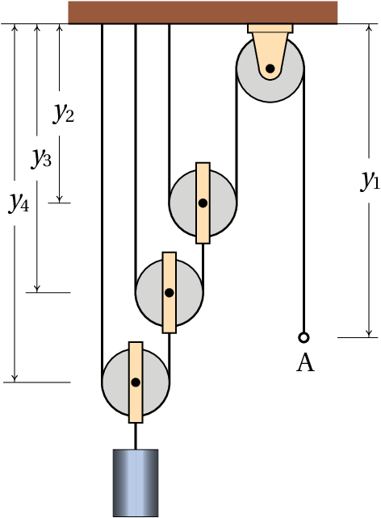

Quando um objeto se desloca no espaço sem seguir uma trajetória determinada, a sua posição já não pode ser definida com uma única variável como nos exemplos estudados no capítulo anterior. No século XVII, o matemático Gottfried Leibniz escreveu que seria desejável criar uma área da matemática que descrevesse a posição diretamente, assim como na álgebra usam-se variáveis para representar valores numéricos. Na mesma época, Isaac Newton enunciou a lei do paralelogramo para somar forças. No entanto, o conceito de vetor usado hoje em dia, que permite concretizar o sonho de Leibnitz, só foi inventado muitos anos depois, no século XIX.
Quando a trajetória de um ponto num objeto em movimento não é conhecida previamente, para determinar a posição do ponto em cada instante de tempo serão necessárias duas variáveis, se o ponto estiver confinado a mover-se numa superfície, ou três variáveis, no caso geral.
Uma forma conveniente de indicar a posição é usando coordenadas cartesianas ( , , ). Os valores dessas coordenadas deverão ser funções contínuas do tempo, , e . O movimento do ponto no espaço pode então ser dividido em três movimentos retilíneos: os movimentos das projeções do ponto em cada um dos eixos cartesianos. Em cada um desses 3 movimentos podem ser aplicadas as equações cinemáticas estudadas no capítulo anterior. As velocidades instantâneas desses 3 movimentos são as derivadas das funções , e , em ordem ao tempo:
Observe-se que se uma ou duas dessas velocidades forem nulas num instante, isso não implica que a velocidade seja nula, pois a terceira velocidade pode ter valor diferente de zero.
As acelerações instantâneas associadas a esses 3 movimentos são as derivadas das respetivas velocidades, em ordem ao tempo:
Já não é preciso dizer que são acelerações tangenciais, porque em cada um desses três movimentos não pode existir componente perpendicular da aceleração, por serem movimentos ao longo duma reta. O tempo pode ser eliminado entre as equações 2.1 e as respetivas equações 2.2, obtendo-se as equações que relacionam as acelerações com as velocidades e as posições:
Quando o movimento do ponto está restringido a um plano, os eixos e podem ser escolhidos nesse plano, facilitando o estudo, porque as equações para e deixam de ser necessárias. E se o movimento do ponto estiver restringido a uma reta, essa reta pode ser usada como eixo dos , sendo apenas necessárias as equações que relacionam , , e .
Em geral, as 9 equações diferenciais 2.1, 2.2 e 2.3 poderão ter de ser resolvidas em simultâneo, porque o movimento da projeção num dos eixos pode depender dos movimentos das outras duas projeções. Nos casos em que não exista essa dependência, as equações para o movimento da projeção em cada eixo podem ser resolvidas independentemente.
No seu livro de 1638, "Diálogos Acerca de Duas Novas Ciências", Galileu Galilei explicou, pela primeira vez, que o movimento de um projétil no ar pode ser decomposto na sobreposição de dois movimentos: o movimento da projeção do projétil num eixo horizontal e o movimento da sua projeção num eixo vertical. A figura 1.10 é igual à figura 108 no livro de Galileu e representa um objeto que foi lançado numa plataforma horizontal, abandonando a plataforma no ponto b.
Galileu também descobriu que, quando a resistência do ar pode ser desprezada, por exemplo, se o projétil tem forma compacta e a sua trajetória não é muito comprida, o movimento da projeção horizontal é retilíneo e uniforme. Ou seja, em intervalos de tempo iguais, os deslocamentos horizontais do objeto são , , , , etc, todos com o mesmo comprimento. Na direção vertical, as distâncias que o objeto cai durante esses intervalos de tempo aumentam quadraticamente; isto é, durante o primeiro intervalo de tempo a distância descida é , durante o segundo intervalo já tem descido uma distância total , que é quatro vezes maior que e durante o terceiro intervalo a distância total descida é , nove vezes maior do que .
A componente vertical da velocidade aumenta, mas como os deslocamentos verticais nos intervalos de tempo iguais, , , e , estão na proporção 1, 3, 5 e 7, então a componente vertical da aceleração (aumento da componente vertical da velocidade) é constante. Galileu também observou que essa aceleração é igual para todos os objetos, independentemente do seu tamanho ou da sua massa, e é a aceleração da gravidade, representada pela letra .
O valor da aceleração da gravidade é ligeiramente diferente em diferentes locais na superfície da Terra, mas é aproximadamente igual a 9.8 m/s2. A resistência do ar produz outra aceleração que contraria o movimento, mas quando essa resistência for desprezável, admite-se que o valor da aceleração é constante e igual a .
Se o eixo dos for definido na vertical e apontando para cima, então as componentes da aceleração são m/s2 e . O movimento da projeção horizontal é uniforme e o movimento da projeção vertical é uniformemente acelerado. Usando as equações dos movimentos uniforme e uniformemente acelerados estudadas no capítulo anterior, obtêm-se as seguintes equações:
Onde e são as projeções horizontal e vertical da velocidade inicial . Por exemplo, se um projétil for lançado com uma velocidade inicial , inclinada um ângulo por cima da horizontal, então e .
Do ponto de vista da trajetória parabólica do objeto, a aceleração tangencial produzida pela gravidade pode ser positiva, negativa ou nula, já que pode fazer aumentar ou diminuir a velocidade do objeto, e pode ter um valor menor que se a trajetória não for vertical, mas existirá também outra aceleração, a aceleração normal ou centrípeta; a soma das componentes verticais dessas duas acelerações deverá ser sempre igual a e a soma das componentes horizontais igual a zero.
Atira-se uma pedra desde uma ponte que está 5 m acima de um rio, com velocidade de 15 m/s e dirigida 36.9° para cima da horizontal. Determine a velocidade que terá a pedra quando entrar na superfície do rio e a altura máxima da sua trajetória, medida desde a superfície do rio (admita que a resistência do ar pode ser desprezada).
Resolução. A componente horizontal da velocidade inicial é m/s e a componente vertical é m/s. é conveniente escolher o eixo dos na horizontal, seguindo a direção da projeção horizontal da velocidade, e o eixo dos na vertical e apontando para cima. A origem pode ser escolhida no ponto onde a pedra foi lançada, mas neste caso vamos escolhê-la diretamente por baixo desse ponto e sobre a superfície do rio. Nesse sistema de coordenadas, a posição inicial é e (unidades SI), as componentes da velocidade são , e as componentes da aceleração são , .
Os dois movimentos ao longo dos dois eixos podem ser analisados independentemente. Como o movimento ao longo do eixo dos é uniformemente acelerado, podem usar-se as equações 2.4, 2.5, 2.6 e 2.7. No entanto, mostraremos como resolver o problema usando o método de separação de variáveis, que é mais geral.
O valor constante de pode substituir-se na segunda equação 2.2 e na segunda equação 2.3, obtendo-se duas equações diferenciais ordinárias de primeira ordem:
Para obter a velocidade da pedra quando entra na água, é necessário resolver a segunda equação, que pode ser feito separando as variáveis e aos dois lados da equação
A seguir, integra-se o lado esquerdo da equação, desde a altura inicial , até à altura final e o lado direito integra-se desde a velocidade inicial até o seu valor final, , ainda desconhecido
Calculam-se estes dois integrais (no Maxima usa-se integrate (9.8, y, 5, 0) e integrate (vy, vy, 9, vf)) e o resultado é
(a segunda solução, , corresponde à velocidade que a pedra teria se tivesse sido lançada para cima desde o rio, passando pela ponte com componente vertical da velocidade igual a 9 m/s e para cima).
Assim sendo, a componente vertical da velocidade quando a pedra entra no rio é m/s. Como o movimento na horizontal é uniforme, a componente horizontal da velocidade é sempre igual ao seu valor inicial 12.0 m/s e a velocidade com que a pedra entra no rio é
No ponto da trajetória onde a altura é máxima, a componente vertical da velocidade é nula, porque a pedra pára de subir e começa a descer. Os mesmos dois integrais já calculados podem ser calculados novamente, mas mudando o ponto final do integral do ponto onde a pedra entra no rio, para o ponto onde está na sua altura máxima, com valor de ainda desconhecido, mas com componente vertical da velocidade nula
onde é a altura máxima. Resolvem-se esses integrais e obtém-se assim o valor da altura máxima
Uma grandeza que tem sempre o mesmo valor, quando é medida por diferentes observadores em diferentes referenciais, chama-se escalar. Algumas das grandezas usadas no capítulo anterior são escalares; por exemplo, o deslocamento e o intervalo de tempo .

Figura 2.2: Vetores livres.
Alguns exemplos de grandezas físicas que não são escalares são as componentes da posição, velocidade e aceleração ao longo de um eixo. Alterando a direção, o sentido ou a origem desse eixo, os valores dessas grandezas também se alteram.
É útil escrever as equações da física de forma a que sejam iguais em qualquer referencial e os vetores permitem atingir esse objetivo. Um exemplo típico de vetor é o vetor deslocamento, que é um segmento de reta orientado entre dois pontos P1 e P2 no espaço, em que o primeiro ponto é considerado a origem do segmento e o outro ponto o fim.
Por exemplo, na figura 2.2 está representado o vector com origem num ponto P1 e fim num ponto P2; a seta indica qual é o ponto final e por cima da letra usada para representar o vetor coloca-se também uma seta, , para que fique claro que se trata de um vetor e não de uma variável algébrica comum.
A distância entre o ponto inicial e final de um vetor deslocamento chama-se módulo, ou norma. Se um vetor é representado por , então neste livro o módulo desse vetor representa-se por (a mesma letra mas sem seta). Como a distância entre dois pontos é um escalar, o módulo de um vetor é uma grandeza escalar. Um vetor é caraterizado pelo seu módulo, pela sua direção, que é a orientação da reta que passa pelos dois pontos, e pelo seu sentido, que indica qual o ponto inicial e qual o ponto final nessa reta.
Dois vetores são iguais se, e só se, a suas direções, sentidos e módulos são iguais. Por exemplo, na figura 2.2 o vetor entre os pontos P1 e P2 e o vetor entre os pontos P3 e P4 consideram-se iguais e, por isso, foram identificados com a mesma letra, . A distância entre P3 e P4 é igual à distância entre P1 e P2 e as retas que passam por esses dois pares de pontos são paralelas. O vetor , entre os pontos P5 e P6, não é igual a por ter módulo e direção diferentes. Este tipo de vetores chamam-se vetores livres porque não interessam os pontos específicos onde estejam colocados, sempre que esses pontos definam corretamente o módulo, direção e sentido do vetor.

Figura 2.3: Soma de vetores.
Na figura 2.3, partindo do ponto P o vetor produz um deslocamento até o ponto Q; a seguir, o vetor provocará um deslocamento até o ponto R; assim sendo, o deslocamento combinado de e é equivalente ao deslocamento desde P até R, representado na figura pelo vetor . Diz-se que é igual à soma dos vetores e
Ou seja, a adição de dois vetores consiste em deslocar um deles de forma a fazer coincidir o seu ponto inicial com o ponto final do primeiro, obtendo-se como resultado o vetor que vai desde o ponto inicial do primeiro vetor até o ponto final do segundo.
A equação implica que e a figura 2.3 mostra que o vetor vai desde o ponto final de até o ponto final de , quando os pontos iniciais de e coincidem. Como tal, para subtrair dois vetores deslocam-se para um ponto inicial comum e o resultado da subtração é o vetor que vai desde o ponto final do segundo vetor, até o ponto final do primeiro vetor.
A adição de vetores é comutativa: deslocar o vetor a continuação do vetor produz o mesmo resultado do que deslocar o vetor a continuação do vetor (figura 2.4). A soma dos vetores e é a diagonal do paralelogramo em que dois dos lados são iguais a e os outros dois lados são iguais a . A soma de vários vetores também verifica a propriedade associativa.

Seguindo as regras para soma e subtração de vetores, a soma de um vetor com si próprio, , é um vetor com a mesma direção e o mesmo sentido, mas com módulo duas vezes maior e a subtração de um vetor a si próprio, , produz um vetor nulo (o mesmo ponto inicial e final). Generalizando esses resultados, define-se o produto de um escalar e um vetor , igual a outro vetor com a mesma direção de mas com módulo igual a . O sentido de é o mesmo de , se for positivo, ou oposto se for negativo. Costuma escrever-se primeiro o escalar e a seguir o vetor, mas o produto entre escalar e vetor é comutativo. Se for igual a zero, é o vetor nulo, .
Qualquer vetor é igual ao produto , em que é um vetor de módulo unitário, com a mesma direção e sentido de (figura 2.5). Esse vetor unitário, com a mesma direção e sentido de , chama-se versor de . Neste livro usa-se um acento circunflexo para indicar versores.

Considere-se um sistema de coordenadas cartesianas, como na figura figura 2.6. Cada ponto P tem 3 coordenadas cartesianas ( , , ) e está no vértice de um paralelepípedo com arestas , e , fases paralelas aos três planos , e e o vértice oposto a P encontra-se na origem O do referencial.

Existem duas formas diferentes de definir os sentidos positivos dos três eixos , e . A forma habitual consiste em seguir a regra da mão direita: fecha-se o punho direito, esticam-se os dedos maior, indicador e polegar, de forma a formarem ângulos retos entre si; o indicador apontará no sentido do eixo dos , o dedo maior no sentido do eixo dos e o polegar no sentido do eixo dos . Um referencial cartesiano pode ser definido indicando o ponto O que define a origem e 3 versores perpendiculares, , e , que definem as direções e sentidos dos 3 eixos.
Qualquer vetor pode ser obtido somando 3 deslocamentos ao longo dos 3 eixos; por exemplo,
em que ( , , ) e ( , , ) são as componentes cartesianas dos vetores. Usando as propriedades da soma vetorial e do produto de escalar por vetor, a soma dos dois vetores e pode ser obtida somando as respetivas componentes:
Ou seja, a soma de dois vetores é outro vetor com componentes iguais à soma das componentes dos vetores originais. Observe que a direção, o sentido e o módulo de um vetor são independentes do sistema de eixos usado e da escolha da origem O; no entanto, as suas componentes ( , , ) são diferentes em diferentes sistemas de eixos. Se dois vetores são iguais, as suas componentes, no mesmo sistema de eixos, também devem ser iguais.
O vetor posição de um ponto P, com coordenadas ( , , ), é o vetor que vai desde a origem O até o ponto P e pode ser obtido somando 3 deslocamentos ao longo dos 3 eixos (ver figura 2.6):
Observe-se que as componentes desse vetor posição são iguais as coordenadas cartesianas do ponto P, ( , , ). O vetor posição do ponto P depende da origem do sistema; ou seja, em dois sistemas com origens diferentes os vetores posição do ponto P são diferentes. Em dois sistemas diferentes mas com a mesma origem, o vetor posição de P é o mesmo, mas as suas componentes são diferentes nos dois sistemas.
A trajetória de um ponto em movimento pode ser definida em cada instante através do vetor posição do ponto,
Cada uma das três componentes, , e , é uma função do tempo. Num intervalo de tempo o deslocamento do ponto (ver figura 2.7) é igual a
em que e são os vetores posição nos instantes e .

O vetor obtido dividindo o deslocamento por é o vetor velocidade média, com a mesma direção e sentido do deslocamento . Define-se o vetor velocidade em cada instante, igual ao deslocamento dividido por , no limite em que se aproxima de zero,
Como as componentes cartesianas do deslocamento vetorial são , e , então o vetor velocidade é igual a
As equações obtidas aplicando aequação 1.8 às três componentes do vetor posição combinam-se numa única equação vetorial:
O aumento do vetor velocidade, , durante o intervalo de tempo , dividido por esse intervalo, define o vetor aceleração,
e as suas componentes são as derivadas das componentes da velocidade:
As equações obtidas aplicando a equação 1.22 às três componentes do vetor velocidade combinam-se também numa única equação vetorial:
As equações 2.15 e 2.18 são as mesmas 6 equações 2.1 e 2.2, combinadas em duas equações vetoriais, usando o facto que a igualdade de dois vetores implica a igualdade das suas componentes.
As restantes 3 equações 2.3 também podem ser combinadas numa equação vetorial: , onde o ponto " " representa o produto escalar, que será introduzido no fim do capítulo. No entanto, para resolver equações diferenciais usando o método de separação de variáveis usado no capítulo anterior, é mais útil usar as 3 equações 2.3 por separado.
A rapidez referida no capítulo anterior é o módulo do vetor . Quando o movimento pode ser em qualquer direção do espaço, chamaremos simplesmente velocidade ao vetor e "valor da velocidade" a ; de forma análoga, o vetor chamar-se-á simplesmente aceleração e será o valor da aceleração.
A velocidade de uma partícula em função do tempo é dada pela expressão (unidades SI):
A partícula passa pela posição ( ) no instante . Encontre o vetor posição, a velocidade e a aceleração no instante s e quando tende para infinito. Trace o gráfico da trajetória da partícula durante os primeiros 60 segundos do movimento.
Resolução. As componentes da velocidade podem ser representadas por uma lista no Maxima:
As funções diff e integrate aceitam também uma lista com expressões, derivando (ou integrando) cada um dos elementos da lista. Assim sendo, a aceleração (derivada da velocidade em ordem ao tempo) é,
As componentes do vetor obtêm-se a partir da equação 2.16.
usou-se o comando assume para indicar que é positiva; se não tivesse sido usado, Maxima teria perguntado o sinal de , já que o resultado do integral depende desse sinal.
O vetor posição, a velocidade e a aceleração aos 15 segundos são,
Para obter os vetores no limite do tempo infinito, usa-se a função limit e o símbolo inf que representa infinito:
Ou seja, a partícula atinge velocidade constante , afastando-se até infinito.
Para traçar o gráfico da trajetória, usa-se a opção parametric da função plot2d. As componentes e do vetor posição devem ser dadas por separado, porque a função plot2d não admite que sejam dadas numa lista. O primeiro elemento da lista r (componente ) identifica-se usando a sintaxe r [1] e o segundo elemento (componente ) com r[2]
O intervalo de tempo desde 0 até 60 foi indicado usando a notação [t, 0, 60]. O resultado mostra-se na figura 2.7.
O movimento de projéteis sob a ação da gravidade, estudado na secção \ref{sec-2.2}, pode também ser analisado de forma vetorial. Escolhendo o eixo dos na direção vertical, com sentido positivo para cima, tal como na secção \ref{sec-2.2}, o vetor aceleração será:
onde a aceleração da gravidade é, aproximadamente 9.8 m/s2.
Se um projétil for lançado com velocidade inicial , a aceleração da gravidade alterará essa velocidade, na direção vertical, mas a componente horizontal de permanecerá constante. O resultado será um vetor velocidade que se encontra no mesmo plano vertical em que está a velocidade inicial . Conclui-se assim que a trajetória do projétil será sempre plana, no plano vertical definido por e .
A única excepção a essa regra é quando não tiver componente horizontal; nesse caso, e são paralelos, não definem nenhum plano e a trajetória é uma reta vertical.
Um canhão dispara uma bala, desde o terraço de um edifício, na posição (unidades SI):
com velocidade inicial (unidades SI):
em que o eixo dos aponta na direção vertical, para cima, e com origem no chão. Admitindo que a resistência do ar pode ser desprezada, calcule a altura máxima atingida pela bala e a posição em que a bala bate no chão.

Resolução: Usando o sistema de eixos definido no enunciado do problema, o vetor aceleração é m/s2. A expressão do vetor velocidade em função de instante obtém-se a partir da equação 2.19 e calculando a primitiva
Onde foi arbitrado no instante em que a bala é disparada.
Substituindo essa expressão e a posição inicial na equação 2.16, obtém-se a expressão do vetor posição em qualquer instante
A altura máxima será atingida no instante em que a velocidade seja na horizontal, ou seja, quando a componente da velocidade for nula
nesse instante, a componente do vetor posição determina a altura máxima:
Para calcular o instante em que a bala bate no chão, calcula-se o tempo em que a componente da posição é igual a zero,
e nesse instante a posição da bala é,
A figura 2.9 mostra os vetores posição e de dois pontos P e Q, no mesmo instante . O vetor , desde o ponto Q até o ponto P, é a posição do ponto P, relativa a Q. Esses três vetores posição estão relacionados pela seguinte equação:

Os vetores velocidade dos dois pontos são as derivadas dos seus vetores posição, em ordem ao tempo
E a derivada do vetor posição relativa, em ordem ao tempo, é a velocidade de P relativa a Q:
Como tal, derivando os dois lados da equação 2.21, em ordem ao tempo, obtém se a relação entre as 3 velocidades:
Isto é, a velocidade do ponto P é igual à sua velocidade relativa a outro ponto Q, mais a velocidade desse ponto Q. E a velocidade do ponto P, relativa a outro ponto Q, é igual à velocidade de P menos a velocidade de Q.
A relação entre as velocidades pode ser derivada novamente, em ordem ao tempo, obtendo-se uma relação semelhante para a aceleração relativa:
Assim, por exemplo, se viajarmos num comboio que se desloca com velocidade e observarmos um objeto com velocidade , dentro do comboio, a velocidade desse objeto em relação à Terra será igual a + . Mas como a Terra se desloca em relação ao Sol, a velocidade do objeto em relação ao Sol seria , em que é a velocidade da Terra relativa ao Sol. Em relação à Galaxia teríamos de somar também a velocidade do Sol na galaxia e assim sucessivamente.
O princípio de adição de acelerações relativas é aproveitado para treinar os candidatos a astronautas. Se o astronauta, a bordo de um avião, tropeça e cai para o chão, a sua aceleração durante a queda, em relação à Terra, é o vetor , que aponta para o centro da Terra e com valor igual à aceleração da gravidade. Se o avião também estiver em queda livre, a sua aceleração em relação à Terra será o mesmo vetor (figura 2.10). A aceleração do astronauta em relação ao avião é igual à diferença entre essas duas acelerações em relação à Terra, que é zero. Ou seja, em relação ao avião, o astronauta não acelera em nenhuma direção, mas flutua no meio do avião durante os segundos que o piloto conseguir manter o avião em queda livre.

Em alguns sistemas em que aparentemente são necessárias várias variáveis para descrever o movimento das diferentes componentes do sistema, o número de graus de liberdade pode ser menor devido à existência de restrições no movimento. A figura 2.11 mostra um exemplo; enquanto o cilindro desce, o carrinho desloca-se sobre a mesa.

O movimento do carrinho pode ser descrito pela variação da distância horizontal até o eixo da roldana fixa. O movimento do cilindro é igual ao movimento da roldana móvel e, como tal, pode ser descrito pela expressão para a distância vertical entre os centros das roldanas, em função do tempo.
Mas enquanto o fio permanecer esticado e sem se quebrar, existirá uma relação entre as velocidades e as acelerações do carrinho e do cilindro. Para encontrar essa relação, escreve-se a o comprimento do fio, , em função das distâncias e :
em que e são os raios das duas roldanas. O fio toca um quarto do perímetro da roldana fixa ( ) e metade do perímetro da roldana móvel ( ). Tendo em conta que , , e são constantes, e derivando a equação anterior em ordem ao tempo, obtém-se,
Ou seja, o valor da velocidade do carrinho será sempre o dobro do valor da velocidade do cilindro. O sinal negativo na equação acima indica que se o cilindro desce o carrinho desloca-se para a direita e vice-versa.
Derivando novamente essa última equação em ordem ao tempo, conclui-se que a aceleração tangencial do carrinho é também o dobro da aceleração tangencial do cilindro:
Essas relações entre as posições, velocidades e acelerações implicam que o sistema tem apenas um grau de liberdade. Uma vez conhecidas as expressões para a posição, velocidade e aceleração de um dos objetos, as expressões da posição, velocidade e aceleração do outro objeto serão obtidas multiplicando (ou dividindo) por 2.
Um segundo exemplo, com dois graus de liberdade, é o sistema de três roldanas e três cilindros na figura 2.12. As alturas dos três cilindros são determinadas pelos valores das 3 distâncias , e ; como existe um único fio em movimento, existe apenas uma restrição (comprimento do fio constante), que permitirá expressar uma das três distâncias em função das outras duas.

O comprimento do fio é,
em que a constante é a soma de metade dos perímetros das roldanas, que não é importante conhecer, já que vai desaparecer quando a equação for derivada e só altera as posições num valor constante.
A derivada da equação anterior em ordem ao tempo é,
Neste caso existem vários possíveis movimentos; por exemplo, se o cilindro A estiver a subir e o cilindro C estiver a descer com a mesma velocidade, o cilindro B permanecerá estático; ou um dos cilindros poderá estar a descer e os outros dois a subir. O que sim não é possível é que os 3 cilindros estejam simultaneamente a descer ou a subir.
A derivada da equação 2.30 conduz à relação entre as acelerações,
No sistema da figura, calcule o valor da velocidade com que sobe o cilindro, quando o anel A for puxado para baixo com velocidade de valor 2 m/s.
Resolução: Neste caso há 4 sistemas em movimento, as três roldanas móveis e o anel A (o movimento do cilindro é igual ao da roldana móvel da qual está pendurado) e 3 fios inextensíveis; portanto, este sistema tem apenas um grau de liberdade. Com o valor da velocidade de A dada no enunciado será possível calcular as velocidades de todas as roldanas móveis.
Sendo a distância desde o teto até o anel e , e as distâncias desde o teto até cada uma das roldanas móveis, os comprimentos dos 3 fios são:
Derivando essas três equações, obtém-se:
e substituindo, encontra-se a relação entre e ,
isto é, o valor da velocidade com que desce o anel é 8 vezes o da velocidade com que o cilindro sobe. Assim sendo, o cilindro sobe com velocidade de valor 0.25 m/s.
O produto escalar entre dois vetores e , indicado por meio de um ponto entre os vetores, , define-se como o produto entre os módulos dos dois vetores e o cosseno do ângulo entre eles:
A figura 2.13 mostra dois vetores e e o ângulo entre eles. A projeção do vetor na direção paralela ao vetor é igual a e a projeção do vetor na direção paralela ao vetor é igual a . Assim sendo, o produto escalar entre os dois vetores é igual ao produto do módulo de um dos vetores pela projeção do outro vetor na direção do primeiro.

Este produto denomina-se escalar porque os módulos dos dois vetores e o ângulo entre as direções são grandezas escalares, que não dependem do referencial usado para os medir; consequentemente, o produto é também um escalar, independente do sistema de eixos usado.
Duas retas que se cruzam num ponto definem dois ângulos e ( ). No caso de vetores, não existe ambiguidade na definição do ângulo, porque deslocando os vetores para um vértice comum, mede-se o ângulo na região por onde passa o vetor + (ver figura 2.14).
O produto escalar entre dois vetores com módulos e está sempre no intervalo [ , ]. Se o ângulo entre os vetores é agudo, , o produto é positivo. Se o ângulo é obtuso, , o produto é negativo e se os vetores são perpendiculares, , o produto é nulo (figura 2.14). O valor mínimo do produto, , obtém-se quando os vetores têm a mesma direção, mas com sentidos opostos. O valor máximo, , obtém-se quando os vetores têm a mesma direção e o mesmo sentido.

Como o módulo dos versores é igual a 1, o produto entre dois versores é sempre igual ao cosseno do ângulo entre eles. Assim sendo, o ângulo entre duas direções no espaço pode ser determinado calculando o arco cosseno do produto escalar entre dois versores nessas direções
Em função das componentes cartesianas dos vetores, o produto escalar é,
Usando a propriedade distributiva do produto escalar e o facto de que o produto escalar entre dois dos versores cartesianos , e diferentes é zero, por serem perpendiculares, e o produto de um desses versores consigo próprio é 1, obtém-se uma expressão útil para calcular o produto escalar em função das componentes cartesianas,
As componentes dos dois vetores são diferentes em diferentes referenciais, mas o produto ( + + ) deve dar o mesmo resultado em qualquer referencial, já que é um escalar.
Usando as duas expressões 2.32 e 2.35 para calcular o produto escalar de um vetor consigo próprio, obtém-se:
Conclui-se que o módulo de um vetor com componentes ( , , ) é dado pela expressão,
(Para conferir a sua resposta, clique nela.)


 Três cilindros A, B e C foram pendurados no sistema de duas roldanas
que mostra a figura. Num instante, a velocidade do bloco A é
m/s, para cima, e a sua aceleração é
m/s2, para baixo; no mesmo instante, a
velocidade e aceleração do bloco C são:
m/s, para
baixo,
m/s2, para cima. Determine a velocidade e
aceleração do bloco B, no mesmo instante, indicando se são para cima
ou para baixo.
Três cilindros A, B e C foram pendurados no sistema de duas roldanas
que mostra a figura. Num instante, a velocidade do bloco A é
m/s, para cima, e a sua aceleração é
m/s2, para baixo; no mesmo instante, a
velocidade e aceleração do bloco C são:
m/s, para
baixo,
m/s2, para cima. Determine a velocidade e
aceleração do bloco B, no mesmo instante, indicando se são para cima
ou para baixo.


Perguntas: 1. B. 2. B. 3. A. 4. C. 5. B.
Problemas
Por cada cm de fio que é puxado para cima, o centro da roldana sobe apenas 1/2 cm no plano.
(clique para continuar)
O ângulo não interessa, porque aumentando ou diminuindo a inclinação do plano, a relação entre os movimentos do fio e do bloco continúa igual; assim sendo, o ângulo não pode entrar na resposta correta.
(clique para continuar)
A velocidade do bloco deve ser menor que a velocidade do extremo do fio porque a distância entre eles está a aumentar.
(clique para continuar)
O ângulo não interessa, porque aumentando ou diminuindo a inclinação do plano, a relação entre os movimentos do fio e do bloco continúa igual; assim sendo, o ângulo não pode entrar na resposta correta.
(clique para continuar)
A variação da velocidade não foi 10 m/s, mas será a hipotenusa do triangulo em que as velocidades inicial e final são os catetos.
(clique para continuar)
(clique para continuar)
A variação da velocidade é a hipotenusa do triangulo em que as velocidades inicial e final são os catetos.
(clique para continuar)
A variação da velocidade é a hipotenusa do triangulo em que as velocidades inicial e final são os catetos.
(clique para continuar)
A variação da velocidade não é nula, porque a velocidade é um vetor e o vetor final não é o mesmo vetor inicial, pois tem direção diferente.
(clique para continuar)
(clique para continuar)
A velocidade é a hipotenusa do triângulo retângulo com um cateto horizontal igual à projeção horizontal da velocidade, que é constante. No ponto mais alto o ângulo da hipotenusa com o cateto horizontal é zero e, como tal, a velocidade é igual á projeção horizontal. No instante inicial esse ângulo é 40°.
(clique para continuar)
A velocidade é a hipotenusa do triângulo retângulo com um cateto horizontal igual à projeção horizontal da velocidade, que é constante. No ponto mais alto o ângulo da hipotenusa com o cateto horizontal é zero e, como tal, a velocidade é igual á projeção horizontal. No instante inicial esse ângulo é 40°.
(clique para continuar)
A velocidade é a hipotenusa do triângulo retângulo com um cateto horizontal igual à projeção horizontal da velocidade, que é constante. No ponto mais alto o ângulo da hipotenusa com o cateto horizontal é zero e, como tal, a velocidade é igual á projeção horizontal. No instante inicial esse ângulo é 40°.
(clique para continuar)
A velocidade é a hipotenusa do triângulo retângulo com um cateto horizontal igual à projeção horizontal da velocidade, que é constante. No ponto mais alto o ângulo da hipotenusa com o cateto horizontal é zero e, como tal, a velocidade é igual á projeção horizontal. No instante inicial esse ângulo é 40°.
(clique para continuar)
Nos dois segundos a aceleração produz uma componente da velocidade igual a 6 m/s.
(clique para continuar)
A velocidade final é a hipotenusa de um triângulo retângulo em que os dois catetos são as componentes e da velocidade. Aparece uma componente , devido a que há aceleração .
(clique para continuar)
(clique para continuar)
A velocidade final é a hipotenusa de um triângulo retângulo em que os dois catetos são as componentes e da velocidade. Aparece ums componente , devido a que há aceleração .
(clique para continuar)
A aceleração produz um aumento de 6 m/s na velocidade, mas como esse aumento é na direção , não pode ser somado diretamente com a velocidade inicial que é na direção . A soma deve ser feita de forma vetorial.
(clique para continuar)
Há três objetos em movimento: carro, barra e cilindro (o movimento das roldanas é igual ao movimento da barra) e apenas uma condição: comprimento do fio constante.
(clique para continuar)
(clique para continuar)
Há três objetos em movimento: carro, barra e cilindro (o movimento das roldanas é igual ao movimento da barra) e apenas uma condição: comprimento do fio constante.
(clique para continuar)
Há três objetos em movimento: carro, barra e cilindro (o movimento das roldanas é igual ao movimento da barra) e apenas uma condição: comprimento do fio constante.
(clique para continuar)
Há três objetos em movimento: carro, barra e cilindro (o movimento das roldanas é igual ao movimento da barra) e apenas uma condição: comprimento do fio constante.
(clique para continuar)
O extremo do fio e o bloco não podem ter a mesma velocidade porque a distância entre eles está a aumentar.
(clique para continuar)